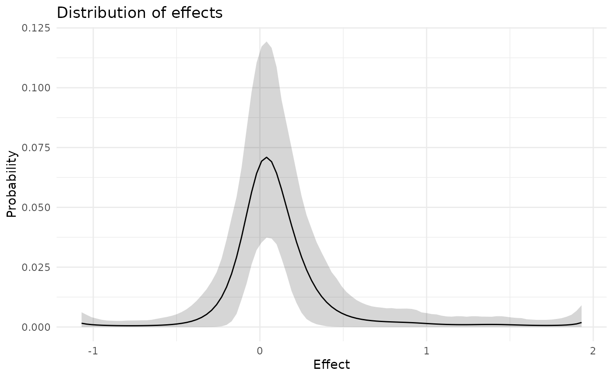
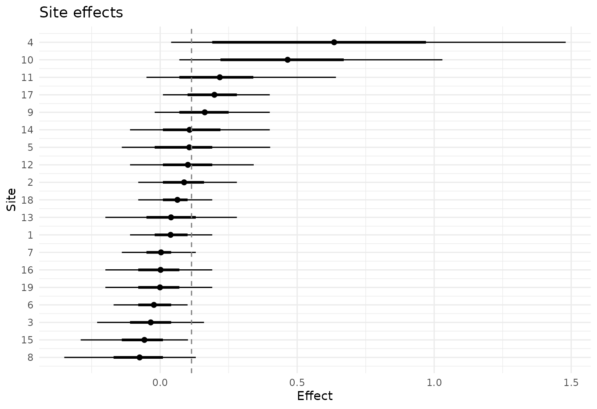

Raudenbush and Bryk (1985) analyzed 19 studies of the effect of teachers’ expectations on their pupils’ IQ scores. In each study teachers were led to expect that certain pupils, in fact chosen at random, would show unusual intellectual growth. Each study gives an estimate of the effect of that expectation, as a standardized mean difference, and a standard error. The studies differ a great deal in size, so their standard errors differ too.
A meta-analysis of such studies usually asks first what the average effect is. Often a second question is of more interest: how the true effects are distributed over studies, and what the effect in each study is once the other studies are taken into account. The random-effects model answers the second question by assuming that the true effects follow a normal distribution (Raudenbush and Bryk 1985). For these studies, however, there is reason to doubt that assumption. Raudenbush (1984) argued that an expectation that the experimenter tries to induce carries less conviction with a teacher who already knows the pupils, and that the effect should therefore be found mainly in the studies where teacher and pupils had met only recently. If a minority of the studies have sizable effects and the others have effects near zero, the distribution of true effects is skewed.
bayesEfron fits the same two-level model as a random-effects meta-analysis, but it does not take the distribution of true effects, called \(g\) below, to be normal: \(g\) may have any smooth shape that a small number of spline functions can describe (Efron 2016; Lee and Sui 2025). This vignette fits the model to the 19 studies and interprets the two things that the fit returns: the estimated \(g\), and the effect of each study.
The studies
The data are in the package as raudenbush1985.
transform(
raudenbush1985[, c("author", "year", "weeks", "yi", "sei")],
sei = round(sei, 3)
)
#> author year weeks yi sei
#> 1 Rosenthal et al. 1974 2 0.03 0.125
#> 2 Conn et al. 1968 21 0.12 0.147
#> 3 Jose & Cody 1971 19 -0.14 0.167
#> 4 Pellegrini & Hicks 1972 0 1.18 0.373
#> 5 Pellegrini & Hicks 1972 0 0.26 0.369
#> 6 Evans & Rosenthal 1969 3 -0.06 0.103
#> 7 Fielder et al. 1971 17 -0.02 0.103
#> 8 Claiborn 1969 24 -0.32 0.220
#> 9 Kester 1969 0 0.27 0.164
#> 10 Maxwell 1970 1 0.80 0.251
#> 11 Carter 1970 0 0.54 0.302
#> 12 Flowers 1966 0 0.18 0.223
#> 13 Keshock 1970 1 -0.02 0.289
#> 14 Henrikson 1970 2 0.23 0.290
#> 15 Fine 1972 17 -0.18 0.159
#> 16 Grieger 1970 5 -0.06 0.167
#> 17 Rosenthal & Jacobson 1968 1 0.30 0.139
#> 18 Fleming & Anttonen 1971 2 0.07 0.094
#> 19 Ginsburg 1970 7 -0.07 0.174yi is the standardized mean difference and
sei its standard error. weeks is the number of
weeks for which the teacher had known the pupils when the expectation
was induced.
recent <- raudenbush1985$weeks <= 1
contact <- ifelse(recent, "at most 1 week", "2 weeks or more")
tapply(raudenbush1985$yi, contact, mean)
#> 2 weeks or more at most 1 week
#> -0.03636364 0.43875000The estimates average 0.44 in the 8 studies with at most a week of
prior contact and -0.04 in the other 11, which is the pattern that
Raudenbush expected. The model below has no covariates and does not use
weeks. It is given only the estimates and their standard
errors, and the question is what it makes of the distribution of effects
from those alone.
as_bef_data() takes the two columns out of the data
frame and checks them. The package calls the units sites, since they may
equally be the sites of a multisite trial; here each site is one study.
There must be at least five of them, with no missing values and with
positive standard errors. Other forms of input are described in
vignette("data-input").
dat <- as_bef_data(raudenbush1985)
dat
#> <bef_data>
#> Sites: 19
#> Source: data.frame
#> theta_hat: min -0.32; median 0.07; max 1.18
#> sigma: min 0.09381; median 0.167; max 0.373In the printed object and in what follows, theta_hat
holds the estimates and sigma their standard errors.
Fitting the model
Fitting needs the cmdstanr package, which is not on CRAN, and CmdStan, which needs a C++ compiler. Both are installed once.
install.packages("cmdstanr",
repos = c("https://stan-dev.r-universe.dev", getOption("repos")))
cmdstanr::install_cmdstan()The model is then fitted with one call.
fit <- bayes_efron_fit(theta_hat = dat$theta_hat, sigma = dat$sigma,
seed = 1985)The model is fitted by Markov chain Monte Carlo, which produces a sample of values, called draws, from the posterior distribution of every quantity in the model; the estimates and intervals below are computed from the draws. By default four chains are run, each with 1,000 warmup iterations, which are discarded, and 3,000 sampling iterations, which are kept. The first call compiles the Stan model, which can take up to a minute. For these data the sampling then took 1.4 seconds.
The model represents \(g\) by the
probabilities that it gives to 101 equally spaced values of the effect,
called the grid. The default grid was used here;
vignette("choosing-a-grid") discusses it, and
vignette("model") sets out the model.
So that this vignette can be built without CmdStan, the result of the
call above is stored in the package as raudenbush_fit,
which keeps one posterior draw in fifteen.
fit <- raudenbush_fit
fit
#> <bayesEfron fit>
#> Model family: RE
#> Sites: 19
#> Grid method: paper_realdata
#> Runtime: 1.351 sec
#> Diagnostics: Rhat 1.007; ESS bulk 676.6; ESS tail 888.8; divergences 0; treedepth hits 1
#> Warnings: max_treedepth
#> Use summary() for posterior summaries.The line of diagnostics gives the worst value of each convergence
diagnostic over all the quantities in the model. R-hat and the effective
sample sizes are satisfactory and there is no divergent transition. The
warning says that an iteration reached the maximum tree depth, which
concerns the efficiency of the sampler and not the validity of the
draws. vignette("diagnostics") explains the diagnostics and
what to do when one of them fails.
The distribution of effects
confint(fit, type = "g")
#> site lower upper point
#> 1 mean_g 0.003896369 0.2499901 0.1144608
#> 2 var_g 0.010904857 0.3041748 0.1093714
#> 3 sd_g 0.104426290 0.5515191 0.3008526The rows are the mean, the variance and the standard deviation of
\(g\), each with its posterior mean
(point) and a 90% posterior interval, which runs from the
5% to the 95% quantile of the draws. Such an interval is often called a
credible interval; level = 0.95 gives a 95% interval, the
level that metafor uses by default for its confidence intervals. The
mean of \(g\) is the average effect
over studies of this kind. It is estimated as 0.11, with an interval
from 0.00 to 0.25. The standard deviation of \(g\) is estimated as 0.30, with an interval
from 0.10 to 0.55.
plot(fit, type = "g")
The line is the posterior mean of the probability that \(g\) gives to each point of the grid, and the band is a pointwise 90% interval. The estimated distribution is concentrated near zero and has a long tail to the right. About 68% of its probability lies between \(-0.2\) and \(0.2\), and about 7% lies above \(0.5\). It is not symmetric about its peak at 0.04: 9% of the probability lies more than 0.4 above the peak and 2% more than 0.4 below it.
The model was not told which studies had recent contact. The posterior mean of \(g\) nevertheless puts most effects near zero and a few well above it, although the band shows how little 19 studies say about the right tail. The curve also turns up slightly at the two ends of the grid, where there are no estimates. The data hardly bear on \(g\) there, so the band is wide and the shape of the curve reflects the prior and the spline functions.
predict() turns the estimated \(g\) into statements about a study that has
not been done. It draws the effect of a new study from \(g\), with a different posterior draw of
\(g\) each time, so that the
uncertainty about \(g\) is part of the
result.
theta_new <- predict(fit, seed = 1)
quantile(theta_new, c(0.05, 0.25, 0.5, 0.75, 0.95))
#> 5% 25% 50% 75% 95%
#> -0.23 -0.05 0.07 0.22 0.73
mean(theta_new > 0.2)
#> [1] 0.2525The last number estimates the probability that the true effect in a new study of this kind exceeds 0.2.
The effect in each study
coef() returns the posterior mean of each study’s
effect, and confint() returns a 90% interval for it.
sites <- cbind(
raudenbush1985[, c("author", "weeks", "yi", "sei")],
posterior_mean = coef(fit),
confint(fit)[, c("lower", "upper")]
)
sites$sei <- round(sites$sei, 3)
sites[c("posterior_mean", "lower", "upper")] <-
round(sites[c("posterior_mean", "lower", "upper")], 2)
sites
#> author weeks yi sei posterior_mean lower upper
#> 1 Rosenthal et al. 2 0.03 0.125 0.04 -0.11 0.19
#> 2 Conn et al. 21 0.12 0.147 0.09 -0.08 0.28
#> 3 Jose & Cody 19 -0.14 0.167 -0.03 -0.23 0.16
#> 4 Pellegrini & Hicks 0 1.18 0.373 0.63 0.04 1.48
#> 5 Pellegrini & Hicks 0 0.26 0.369 0.11 -0.14 0.40
#> 6 Evans & Rosenthal 3 -0.06 0.103 -0.02 -0.17 0.10
#> 7 Fielder et al. 17 -0.02 0.103 0.00 -0.14 0.13
#> 8 Claiborn 24 -0.32 0.220 -0.07 -0.35 0.13
#> 9 Kester 0 0.27 0.164 0.16 -0.02 0.40
#> 10 Maxwell 1 0.80 0.251 0.47 0.07 1.03
#> 11 Carter 0 0.54 0.302 0.22 -0.05 0.64
#> 12 Flowers 0 0.18 0.223 0.10 -0.11 0.34
#> 13 Keshock 1 -0.02 0.289 0.04 -0.20 0.28
#> 14 Henrikson 2 0.23 0.290 0.11 -0.11 0.40
#> 15 Fine 17 -0.18 0.159 -0.06 -0.29 0.10
#> 16 Grieger 5 -0.06 0.167 0.00 -0.20 0.19
#> 17 Rosenthal & Jacobson 1 0.30 0.139 0.20 0.01 0.40
#> 18 Fleming & Anttonen 2 0.07 0.094 0.06 -0.08 0.19
#> 19 Ginsburg 7 -0.07 0.174 0.00 -0.20 0.19Each posterior mean is drawn from the study’s own estimate toward the values where \(g\) puts most of its probability, here the peak just above zero. How far depends on the standard error. Studies 5 and 17 have similar estimates, 0.26 and 0.30, but standard errors of 0.369 and 0.139, and their posterior means are 0.11 and 0.20.
Because \(g\) has a long right tail, a large positive estimate is not drawn all the way back, and the interval excludes zero for 3 studies (Pellegrini & Hicks; Maxwell; Rosenthal & Jacobson). All of them had at most a week of prior contact.
For study 4, which has the largest estimate, the interval runs from
0.04 to 1.48 and is wider than the one that its estimate and standard
error give by themselves, 0.57 to 1.79. With a normal \(g\) of known mean and variance that cannot
happen. Here the model is undecided between a large true effect and a
small one that was overestimated: it gives probability 0.34 to an effect
below 0.3 and 0.33 to one above 0.8. The result for this study is also
the one that depends most on the choice of the grid: over the nine
specifications compared in vignette("choosing-a-grid") its
posterior mean ranges from 0.44 to 0.85, and cross-validation does not
tell those specifications apart. A conclusion about a study as extreme
as this one should be checked against that comparison before it is
reported.
The limits of the intervals are quantiles of posterior draws of the effect. The draws take values on the grid, whose spacing here is 0.03, so the limits should be read to no finer a resolution than that. A limit that lies between two grid points is an interpolation between two draws.
plot(fit, type = "caterpillar")
The points are the posterior means, the thin lines are the 90% intervals and the thick lines are the central 50% intervals. The studies are numbered as in the data, and the dashed line marks the mean of \(g\).
What the fitted object holds
fit is a list with three elements.
fit$draws holds the posterior draws of every quantity in
the model, in the format of the posterior package.
fit$posterior holds the draws of the mean, variance and
standard deviation of \(g\) and of two
summaries of the fit, and fit$metadata holds the data, the
settings and summaries of the draws. ?bef_fit describes
them and lists the methods. summary() prints the summaries
that are used most.
summary(fit)
#> <summary.bef_fit>
#>
#> Prior g:
#> mean: 0.1145
#> var: 0.1094
#> sd: 0.3009
#>
#> Diagnostics:
#> Rhat (max): 1.007
#> ESS bulk (min): 676.6
#> ESS tail (min): 888.8
#> Divergences: 0
#> Treedepth hits: 1
#> Effective params: mean 10.29, sd 2.84
#> Log marginal lik.: mean -4.047, sd 1.439
#> Runtime: 1.351 sec
#> Warnings: max_treedepth
#>
#> Theta summary:
#> site mean sd lower upper map
#> 1 0.03805 0.09832 -0.11 0.19 0.04
#> 2 0.0874 0.1121 -0.08 0.28 0.07
#> 3 -0.03442 0.1188 -0.23 0.16 -0.02
#> 4 0.635 0.4979 0.04 1.48 0.19
#> 5 0.1063 0.186 -0.14 0.4015 0.07
#> 6 -0.02282 0.08604 -0.17 0.1 -0.02
#> 14 0.1073 0.1658 -0.11 0.4 0.07
#> 15 -0.05756 0.1177 -0.29 0.1015 -0.05
#> 16 0.001513 0.1169 -0.2 0.19 0.01
#> 17 0.1979 0.1221 0.01 0.4 0.19
#> 18 0.063 0.08101 -0.08 0.19 0.07
#> 19 -0.0006152 0.1197 -0.2 0.19 0.01
#> ... 7 sites omitted ...Prior g is the distribution of true effects, which is
the prior distribution of each study’s effect.
Effective params and Log marginal lik. are
explained in vignette("model"). In the table of study
effects, sd is the posterior standard deviation,
lower and upper are the limits of the 90%
interval and map is the posterior mode, the point of the
grid with the largest posterior probability. Where the posterior
distribution is skewed the mode and the mean are far apart. For study 4
the mode is 0.19 and the mean 0.63, which is one more sign that the
model is undecided about that study.
Any quantity in the model can be summarized from the draws with the functions of the posterior package.
posterior::summarize_draws(
posterior::subset_draws(posterior::as_draws(fit),
variable = c("mean_g", "sd_g", "lambda"))
)
#> # A tibble: 3 × 10
#> variable mean median sd mad q5 q95 rhat ess_bulk ess_tail
#> <chr> <dbl> <dbl> <dbl> <dbl> <dbl> <dbl> <dbl> <dbl> <dbl>
#> 1 mean_g 0.114 0.106 0.0786 0.0699 0.00390 0.250 0.999 740. 692.
#> 2 sd_g 0.301 0.286 0.137 0.142 0.104 0.552 1.00 665. 640.
#> 3 lambda 0.102 0.0592 0.155 0.0638 0.00397 0.332 1.01 504. 520.